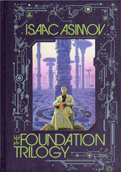

A big Hello to the World

Allow me to introduce myself to you all, wanderers of the virtual world. I am Romain Defouilhoux , a 22 year old French boy whose profile page you just have landed on for no reason at all. I currently am finalizing my Master's in Management at HEC Paris. I'm a nature lover ; above all else, apes and monkeys fascinate me. I'm a fan of video games and new tech, which got me passionate about science-fiction, be it on pages or on screen. I also happen to worship Chaikovsky's music.
Discover Chaikovsky's finest pieceWhy I chose
I dare say, why not? After high school, I dared not even think about whatever plans the future had in store for me. All I wanted was to be happy. I took a two-year preparatory course and ended up at HEC. The school, being very prestigious, is said to be a door-opener. I was lost and a door-opener was exactly what I needed. I'm still looking for a future, by the way.
My life is pure science-fiction
I believe when I first finished reading the third book of Isaac Asimov's Foundation series, my eyes opened so wide they almost fell out of their sockets. I was blown away. If ever there were an author you wished for me to recommend, I would not dare hesitate: Isaac is and always will be the one.
Open the book to unveil its secrets...
My dream workplace?
Borneo Island
Nestled in the heart of South East Asia, Borneo is home to fascinating species now facing extinction, among which Proboscis monkeys and the mighty orangutans. In the Malaysian and Indonesian languages, "orang hutan" means "person of the forest". Their gaze is just as deep as that of a human being. I often hear they look like us but considering how evolution works, it is proper to say we look like them.